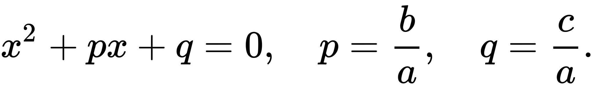

Квадратное уравнение — алгебраическое уравнение второй степени с общим видом
в котором x — неизвестное, а коэффициенты a, b и c — вещественные или комплексные числа.
 — это значение переменной x, обращающее квадратный трёхчлен в ноль,
а квадратное уравнение в верное числовое равенство. Также это значение называется корнем самого многочлена
— это значение переменной x, обращающее квадратный трёхчлен в ноль,
а квадратное уравнение в верное числовое равенство. Также это значение называется корнем самого многочлена
Элементы квадратного уравнения имеют собственные названия:
- a называют первым или старшим коэффициентом
- b называют вторым, средним коэффициентом или коэффициентом при x
- c называют свободным членом

Полным называют такое квадратное уравнение, все коэффициенты которого отличны от нуля.
Неполным называется такое квадратное уравнение, в котором хотя бы один из коэффициентов, кроме старшего (либо второй коэффициент, либо свободный член), равен нулю.
Квадратное уравнение является разрешимым в радикалах, то есть его корни могут быть выражены через коэффициенты в общем виде.
Геометрический смысл
Графиком квадратичной функции является парабола. Решениями (корнями) квадратного уравнения называют абсциссы точек пересечения параболы с осью абсцисс.
Если парабола, описываемая квадратичной функцией, не пересекается с осью абсцисс, уравнение не имеет вещественных корней.
Если парабола пересекается с осью абсцисс в одной точке (в вершине параболы), уравнение имеет один вещественный корень (также говорят, что уравнение имеет два совпадающих корня).
Если парабола пересекает ось абсцисс в двух точках, уравнение имеет два вещественных корня (см. изображение справа.)
Если коэффициент a положительный, ветви параболы направлены вверх и наоборот. Если коэффициент b положительный (при положительном a, при отрицательном наоборот),
то вершина параболы лежит в левой полуплоскости и наоборот.
Графический способ решения квадратных уравнений
Помимо универсального способа, описанного выше, существует так называемый графический способ.Есть всего пять основных способов графического решения квадратных уравнений.
- a называют первым или старшим коэффициентом Для решения квадратного уравнения
- b называют вторым, средним коэффициентом или коэффициентом при x Для решения того же уравнения этим способом его преобразуют к виду
- c называют свободным членом Квадратное уравнение преобразуют к особому виду:
этим способом строится график функции и
отыскивается абсциссы точек пересечения такого графика с осью x
 и строят в одной системе координат графики квадратичной функции
и строят в одной системе координат графики квадратичной функции  и линейной функции затем находят абсциссу точек их пересечения.
и линейной функции затем находят абсциссу точек их пересечения.

затем:
Квадратичная функция
На рис.1 изображена квадратичная функция
Уравнение квадратичной функции содержит квадратный трёхчлен. Графиком квадратичной функции является парабола.
Многие свойства графика квадратичной функции так или иначе связаны с вершиной параболы, которая во многом определяет положение и внешний вид графика.